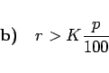

Inhalt Index DeskTop Bronstein

 Arithmetik Finanzmathematik Rentenrechnung Nachschüssig konstante Rente
Arithmetik Finanzmathematik Rentenrechnung Nachschüssig konstante Rente


Zur nachschüssigen Rentenzahlung stehe ein Kapital K zur Verfügung, das mit  verzinst wird. Zu jedem Zinstermin werde der Rentenbetrag r ausgezahlt. Der Kontostand Kn nach n Zinsperioden, also auch nach n Rentenzahlungen, beträgt:
verzinst wird. Zu jedem Zinstermin werde der Rentenbetrag r ausgezahlt. Der Kontostand Kn nach n Zinsperioden, also auch nach n Rentenzahlungen, beträgt:
Folgerungen aus dieser Gleichung:
| (1.90b) |
Es ergibt sich Kn=K, d.h., das Kapital ändert sich nicht. Es liegt der Fall der ewigen Rente vor.
|  | (1.90c) |
Das Kapital wird aufgebraucht, und zwar nach N Rentenzahlungen. Aus (1.90a) folgt dann für KN=0:
Wird eine unterjährige Verzinsung und eine unterjährige Rentenzahlung vorgenommen, dann ist in den Formeln (1.88) bis (1.90a) n durch mn und entsprechend  durch zu ersetzen, wenn die ursprüngliche Zinsperiode in m gleich lange neue Zinsperioden unterteilt wird.
durch zu ersetzen, wenn die ursprüngliche Zinsperiode in m gleich lange neue Zinsperioden unterteilt wird.
| Beispiel |
|
Welcher Betrag muß 20 Jahre lang monatlich nachschüssig eingezahlt werden, damit daran anschließend 20 Jahre lang monatlich eine Rente von 2000.-Euro gezahlt werden kann? Die Verzinsung erfolge monatlich mit |